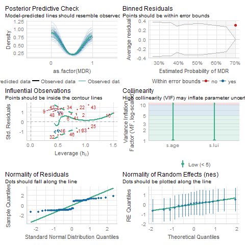

Supplementary Material
A Match Made in Landfills? Exploring the diversity and burden of antimicrobial resistance genes carried by white stork (Ciconia ciconia) throughout the breeding season in Madrid, Spain
This shows some materials that could go into a supplementary file. Often you want/need references here too. You can use the same reference bib file for this and the main text (as done here) or have separate bib files.
For illustrative purposes, I’m doing the supplement as pdf. For this to work, you need a (La)TeX system installed. It’s easy. Just follow these steps.
Of course you would choose the format based on needs.
I’m also using a different style for the references here. (vancouver vs apa in the main manuscript). Usually one would have the formatting of the references the same in those two documents, but I want to illustrate how easy it is to switch reference formatting styles, you just need to get the right CSL file and specify it in the YAML header. We could also have a seperate reference bibtext (.bib) file, but here we are using the same.
Overview
Contained in this document is supplementary material for the manuscript, “A Match Made in Landfills? Exploring the diversity and burden of antimicrobial resistance genes carried by white stork (Ciconia ciconia) throughout the breeding season in Madrid, Spain”. Supplementary materials include instructions for reproducing data analysis and additonal model results.
Code and file information
To reproduce the data analysis for this manuscript, raw data should first be cleaned by running the DataCleaningScript.qmd file in the “1 Data Cleaning Script” folder. Next, the Data_Exploratory_Analysis.qmd file from the “3 Analysis Scripts” should be run, followed by the StatisticalAnalysis_ModelFitting.qmd file from the same folder. To recreate the manuscript, the Manuscript.qmd file under the “5 Manuscript/manuscript” folders should be run. Raw data is housed in the file StorkAMRraw_2020_2021.csv within the “1 Data Cleaning Script/raw_data” folders. Processed data is housed in the stork_AMR_clean.rds file within the “2 Clean Data” folder. Additionally, a README.md file that serves as a codebook for this project can be found within the “1 Data Cleaning Script/raw_data” folders.
Additional Method Details
Binomial-family generalized linear mixed models (GLMMs) and linear mixed models (LMMs) were used to assess the effects of multiple predictors on the presence of multi-drug resistance (MDR) and total antimicrobial resistance gene burden (AMR), respectively.
Additional results
Exploratory Analysis Results
Full Analysis Results
A total of 14 GLMMs (including a global and null model) were run to assess the effects of several predictors on MDR. Based on Akaike’s Information Criterion adjusted for small sample size (AICc), model 11 (containing the predictors LUI and age) was the highest performing model. A total of 15 LMMs were run to assess the effects of several predictors on AMR. Based on AICc, the global model was the highest performing model, followed by a univariate LMM containing age as the only predictor.
GLMM Model Results


LMM Model Results

Discussion
Any additional discussion regarding the supplementary material/findings.
These papers [@mckay2020; @mckay2020a] are good examples of papers published using a fully reproducible setup similar to the one shown in this template.